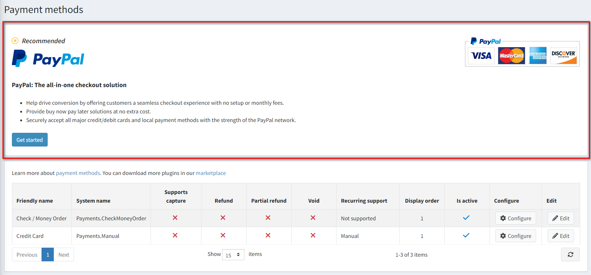
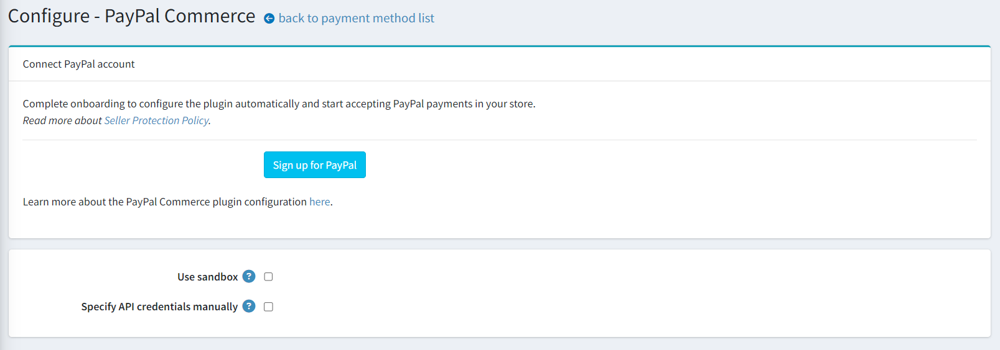
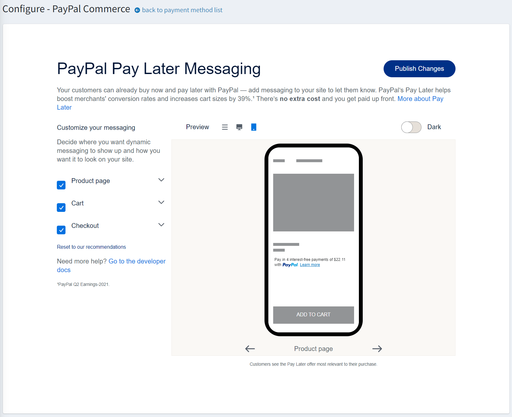

PayPal Commerce
PayPal Commerce 為您的買家提供簡化且安全的結帳體驗。PayPal 會自動向您的顧客顯示最相關的付款方式，讓他們能更輕鬆地使用信用卡付款、Apple Pay、Google Pay、PayPal Credit、Venmo、iDEAL、Bancontact 以及其他付款方式來完成購買。
設定付款方式
若要設定 PayPal Commerce 外掛，請前往 設定 → 付款方式。接著在此頁面找到 PayPal 付款方式。這並不困難，因為它是我們推薦的付款方式。

此外，您也可以從導覽選單存取外掛設定。

請依照下列步驟設定 PayPal Commerce：
1. 連接 PayPal 帳戶
無論您是否已經擁有 PayPal 商業帳戶、僅有個人帳戶，或是尚未註冊，連接的步驟都是相同的：
在管理後台開啟 PayPal Commerce 設定頁面。您將會看到以下表單：

選擇您想要連接的帳戶類型：正式環境（production）或沙盒測試環境（sandbox）。如果您想先測試此外掛，請啟用 Use sandbox 設定。
點擊 Sign up for PayPal 按鈕，您將會看到下方的彈出視窗，讓您填寫資料並連接帳戶：

您需要完成幾個步驟以填寫所有必要細節。具體的填寫內容會根據您是建立新帳戶、連接現有帳戶，還是將個人帳戶升級為商業帳戶而有所不同。
當您完成作業並通過 PayPal 付款核准後，請回到外掛設定頁面並重新整理。您將會看到以下表單：

在此您將會看到連接成功的通知。若出現任何警告或錯誤，請前往 後台 → 系統 → 紀錄 查看更多詳細資訊。
同時也會顯示帳戶連接程序的狀態；若有任何步驟尚未完成，請登入您的 PayPal 個人帳戶以完成該步驟。
如果您連接的是沙盒帳戶，系統也會提醒您在完成測試後需建立正式環境帳戶。
如果您在 PayPal 帳戶中已經建立了 REST API App 並希望繼續使用，請勾選 Specify API credentials manually 核取方塊，並依照下列方式在下方欄位指定您的憑證：

2. 設定外掛
在 後台 → 設定 → 付款方式 頁面中找到 PayPal Commerce 付款方式並點擊 設定，您將會看到以下設定區塊：

選擇 付款類型，設定為立即請款，或在訂單建立後進行請款授權。
勾選 使用自訂卡片欄位 以在您的商店中啟用進階信用卡與簽帳金融卡付款。這是一個符合 PCI 標準的解決方案，讓顧客能直接在您的商店進行信用卡與簽帳金融卡付款，無需重新導向至第三方網站。
勾選 使用 Apple Pay 以在您的商店中啟用 Apple Pay。在沙盒或正式環境開始使用之前，請驗證您環境中將顯示 Apple Pay 按鈕的任何網域名稱。Apple Pay 交易僅能在註冊給您的網域與網站上運作。
- 下載 您環境的網域關聯檔案。
- 在您想要註冊的每個網域與子網域的網站上，將該檔案放置於 /.well-known/apple-developer-merchantid-domain-association 路徑下。
- 登入 PayPal 商務帳戶，前往 付款方式，在 Apple Pay 區塊中選擇 管理 連結，並在該處 新增網域。
勾選 使用 Google Pay 以在您的商店中啟用 Google Pay。
勾選 使用替代付款方式 以在您的商店中啟用替代付款方式。透過替代付款方式，全球各地的顧客皆能使用其銀行帳戶、電子錢包及其他在地付款方式進行支付。例如，荷蘭的顧客可能傾向使用 iDEAL（當地超過半數消費者用於線上購物的支付方式），而同一網站上的比利時顧客則可能想使用當地的熱門付款方式 Bancontact。此外掛預設會自動在單一位置呈現所有符合資格的按鈕。
勾選 使用 Vault 以啟用 PayPal Vault。這能讓系統安全地儲存顧客的付款資訊，並在後續交易中使用，顧客無需再次輸入付款明細。
勾選 跳過「確認訂單」頁面 以在結帳過程中跳過此步驟；如此一來，在 PayPal 網站上核准付款後，顧客將被直接重新導向至「訂單完成」頁面。
勾選 使用貨運追蹤 以使用包裹追蹤功能。若要自動將貨運狀態與 PayPal 同步，請在管理後台建立或編輯貨運資訊時，指定追蹤號碼與貨運公司：

接著前往 PayPal 顯著功能 面板：

在此面板上，定義顯示設定：
勾選 在購物車顯示按鈕 核取方塊，除了預設的結帳按鈕外，亦在購物車頁面上顯示 PayPal 按鈕。
勾選 在商品詳細頁顯示按鈕 核取方塊，以在商品詳細頁面上顯示 PayPal 按鈕，讓買家無需執行完整的結帳流程即可完成購買。
勾選 在頁首連結顯示標誌 核取方塊，以在頁首連結中顯示 PayPal 標誌。這些標誌與橫幅是讓買家知道您選擇 PayPal 來安全處理付款的絕佳方式。
- 若已勾選前一個核取方塊，則會顯示 標誌原始碼 欄位。在此欄位中，輸入該標誌的原始碼。您可以在 PayPal 標誌中心 (PayPal Logo Center) 找到更多標誌與橫幅。您也可以修改程式碼，使其能妥善契合您的佈景主題與網站風格。
勾選 在頁尾顯示標誌 核取方塊，以在頁尾顯示 PayPal 標誌。這些標誌與橫幅是讓買家知道您選擇 PayPal 來安全處理付款的絕佳方式。
- 若已勾選前一個核取方塊，則會顯示 標誌原始碼 欄位。在此欄位中，輸入該標誌的原始碼。您可以在 PayPal 標誌中心找到更多標誌與橫幅。您也可以修改程式碼，使其能妥善契合您的佈景主題與網站風格。
點擊 儲存 以儲存外掛設定。
Note
您不需要啟用此外掛，它在安裝後會立即啟用。如果基於某些原因您不打算在商店中使用它，可以在 設定 → 本機外掛 頁面中將其停用。
3. 設定 PayPal Pay Later 訊息
PayPal 提供短期、無息付款以及其他特殊融資選項，讓買家可以「先買後付」，同時賣家能預先收到款項。Pay Later 優惠會根據國家/地區而有所不同。透過 Pay Later 優惠，賣家能賦予顧客更強大的購買力，並讓他們能靈活地分期支付購物費用。 如需有關 Pay Later 的詳細資訊，請參閱 先買後付。
點擊 設定 → PayPal Commerce 選單項目中的 Pay Later 連結，您將會看到以下設定介面：

您可以在此自訂您的 Pay Later 訊息。
點擊 Publish changes 以儲存設定。
限制商店與顧客角色
您可以將任何付款方式限制在特定的商店與顧客角色。這意味著該付款方式將僅適用於特定的商店或顧客角色。您可以從外掛清單頁面進行此設定。
前往 設定 → 本地外掛。找到您想要限制的外掛。以我們的範例來說，是 PayPal Commerce。為了更快速找到它，請使用頁面上方的搜尋面板，並選擇付款方式選項來搜尋 外掛名稱 或 群組。

點擊 編輯 按鈕，編輯外掛詳情視窗將顯示如下：

您可以設定以下限制：
點擊 儲存。